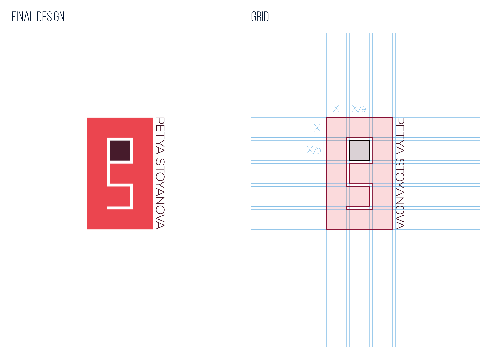
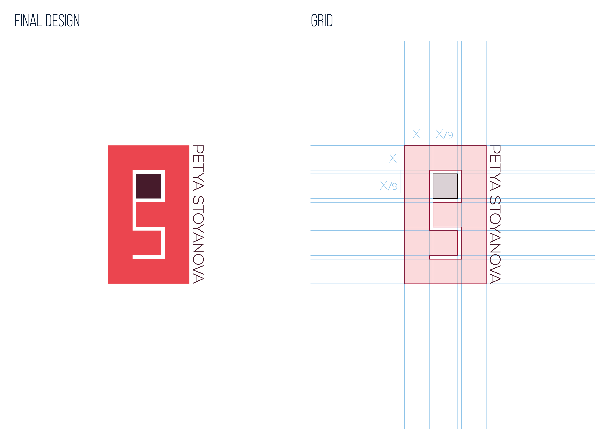
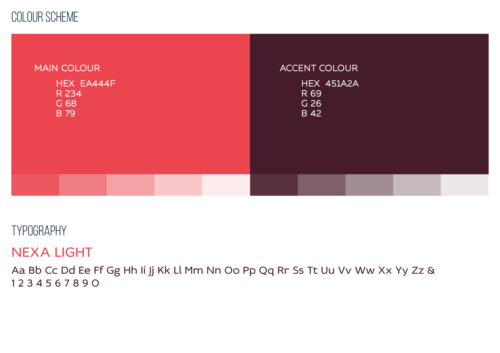
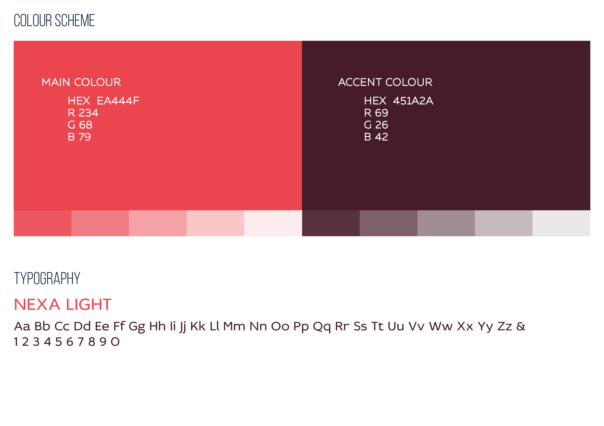

Pet Stoyanova
What kind of designer am I? Lines could be a bit blurry indeed.
I am a multidisciplinary designer with expertise in visual design, user experience design, and user interface design. I am a strong advocate for user-centered design and emotional branding. I have excellent drawing, rapid prototyping and visual design skills, am proficient in using Adobe products, and learning to use new software is not a challenge for me. I enjoy being part of all stages of product development from inception to delivery and feel most comfortable in an Agile environment and team collaboration. Also, I am familiar with Kanban and Scrum methodologies.
Within my recent role in the Research and Development team at CoSector, University of London, I have taken the lead on various visual and user experience design projects. I assisted the Lead User Experience Researcher in conducting user research and validation testing sessions with users. I helped analyse research to generate insights that served as the basis for various research outputs, including personas, user journeys, and concept maps. I also produced infographics and visualisations of research outputs for content marketing initiatives, including white papers. Furthermore, I built low and high fidelity prototypes and mockups which I implemented in collaboration with the lead Front-End Developer. Additionally, I presented the user research outputs and demoed the product's functionality to current and potential customers.
I am particularly interested in the EdTech and Games industries and I like to be part of a team aspiring to create awesome, unique, and memorable user experiences. In essence, I want to design and create products which people love to use and that rely on my creativity, analytic skills, and user-centered approach.
40%
Visual and UI design40%
Research & UX design20%
Front-end development
, illustration enthusiast & orchid hoarder.
What kind of designer am I? Lines could be a bit blurry indeed.
I am a multidisciplinary designer with expertise in visual design, user experience design, and user interface design. I am a strong advocate for user-centered design and emotional branding. I have excellent drawing, rapid prototyping and visual design skills, am proficient in using Adobe products, and learning to use new software is not a challenge for me. I enjoy being part of all stages of product development from inception to delivery and feel most comfortable in an Agile environment and team collaboration. Also, I am familiar with Kanban and Scrum methodologies.
Within my recent role in the Research and Development team at CoSector, University of London, I have taken the lead on various visual and user experience design projects. I assisted the Lead User Experience Researcher in conducting user research and validation testing sessions with users. I helped analyse research to generate insights that served as the basis for various research outputs, including personas, user journeys, and concept maps. I also produced infographics and visualisations of research outputs for content marketing initiatives, including white papers. Furthermore, I built low and high fidelity prototypes and mockups which I implemented in collaboration with the lead Front-End Developer. Additionally, I presented the user research outputs and demoed the product's functionality to current and potential customers.
I am particularly interested in the EdTech and Games industries and I like to be part of a team aspiring to create awesome, unique, and memorable user experiences. In essence, I want to design and create products which people love to use and that rely on my creativity, analytic skills, and user-centered approach.
40%
Visual and UI design40%
Research & UX design20%
Front-end development


 

 
